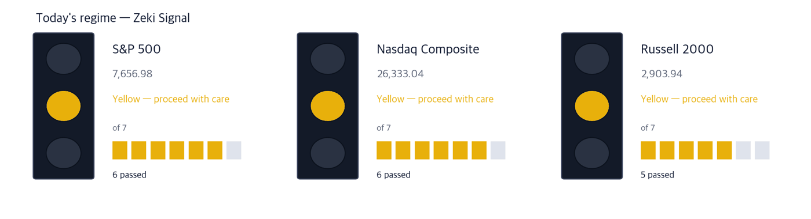
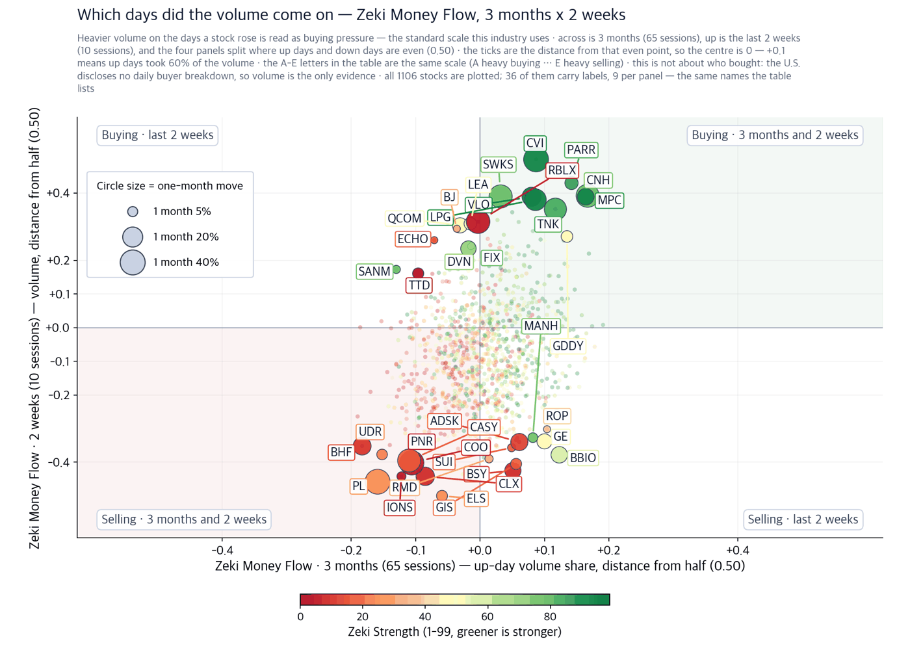
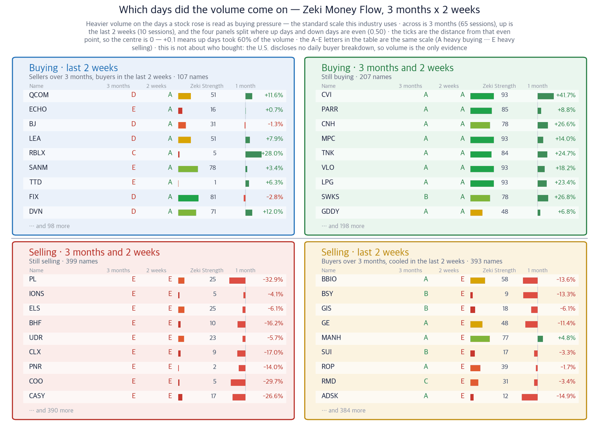
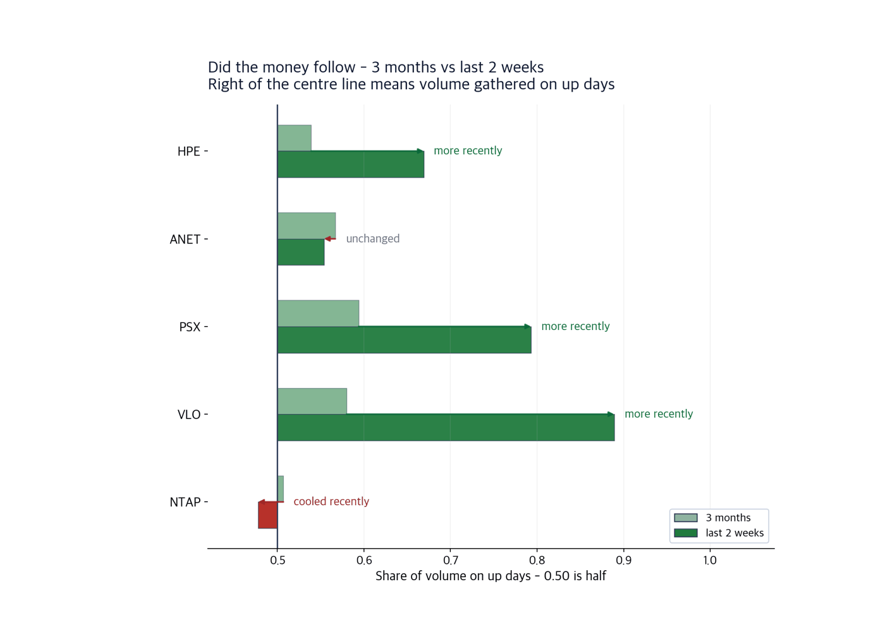

S&P 500 7,656.98 | Nasdaq Composite 26,333.04 | UST 10-year 4.97% | WTI crude $100.05 | Zeki Signal Yellow |
New York fell for three sessions last week and took part of it back on Friday. The S&P 500 closed September 11 at 7,656.98 and the Nasdaq Composite at 26,333.04. The Dow ended at 52,573.29, the Russell 2000 at 2,903.94.
What moved prices over the weekend was neither earnings nor data. The people who build artificial intelligence asked the industry to slow its own development down. Anthropic's chief executive wrote it on Saturday; the heads of OpenAI and xAI agreed within hours. The White House disagreed, arguing that more regulation would hand the lead to China. (Wall Street Journal and IBD, September 14)
So today turns on one question: if the model race slows, what happens to the companies that have been selling into it? Nasdaq-100 futures were down 1.3% before the open and Dow futures down 0.1%. Where prices split gives the first part of the answer.

| Lit lamp | Today's regime. Green means buyers have the edge, yellow means wait, red means no new buys. |
| Filled squares | How many of the 7 conditions passed. More filled means firmer market structure. |
| All filled but not green | Something else pulled the grade down one step. The reason is printed under the lamp. |
All three indexes read yellow. The S&P 500 and the Nasdaq cleared six of our seven conditions and the Russell 2000 five. What the first two missed is the condition asking an index to sit at least 30% above its 52-week low. The Russell 2000 also sits below its 50-day average.
1. The prices that followed belonged to the equipment, not the models. Hewlett Packard Enterprise rose 12.4% on September 11 and touched a 52-week high; NetApp rose 8.5% the same day. Neither company builds models. They sell the servers and storage that run them, and orders already booked get delivered and paid for no matter how fast the models improve.
2. In oil, the money went to refining rather than to drilling. Iran-aligned forces in Yemen took control of a second shipping corridor (Wall Street Journal, September 14). Exxon Mobil, which produces crude, carries a Zeki Strength of 74 and Chevron 73. Phillips 66 and Valero Energy, which refine it, both read 93. When a route closes, product prices move before crude does.
3. We are leaving Nvidia out of today's themes. It sits at the centre of the story, but its Zeki Strength is 62, its Zeki Money grade is D, and the stock is down 2.6% over the month. A plausible story with no price behind it does not become a name here.
| Date | What to watch | What it changes |
|---|---|---|
| Tuesday, September 15 | First day of the policy meeting | Futures put the odds of a hike at 87%. It would be this year's first |
| Wednesday, September 16 | Policy decision, 2 p.m. ET | Chairman Kevin Warsh holds the press conference. A hike puts 5% in reach for the 10-year |
| Wednesday, September 16 | Apple product launch | A folding handset is expected, which reaches the suppliers as well |
Anthropic's chief executive wrote on Saturday that the industry should pace how fast capability improves so that risk prevention can keep up. OpenAI's chief executive said he would use outside evaluators, and Elon Musk said the argument was right (IBD, September 14). Nvidia was marked slightly lower before the open.
Yet the names that rose on heavy volume on September 11 were not the model builders. Both of them make servers. The data centres are already going up, and slowing model work does not leave a half-finished building empty.
It is up 33.1% over three months and sitting at a 52-week high. The weakness is that the gain arrived in a single session: the first thing to check is whether it keeps what it added on September 11 over the next few days. What would confirm it — It holds above the September 11 close of $62.09 while the Zeki Money grade stays at A. What would invalidate it — It loses the September 11 close of $62.09 and the Zeki Money grade falls below C. |
It is down 5.2% over the month, giving back part of the three-month gain. It clears three of our four tests, and the month is the one it misses. What would confirm it — It holds above the September 11 close of $199.59 and the one-month change turns positive. What would invalidate it — It loses the September 11 close of $199.59 and the Zeki Money grade falls below B. |
It clears two of our four tests. The one-day move was large, but the month is still negative and the three-month Zeki Money grade is C. The evidence is thin. What would confirm it — It holds above the September 11 close of $199.28 and the one-month change turns positive. What would invalidate it — It loses the September 11 close of $199.28 and the three-month Zeki Money grade falls to D. |
West Texas Intermediate rose 9.4% last week to close at $100.05 a barrel, and 20% over two weeks. Before Monday's open it traded above $102 (IBD, September 14).
The cause is the route, not demand. Territorial gains by Iran-backed militants in Yemen have brought a second regional energy corridor under their sway (Wall Street Journal, September 14). When a route narrows, the company that turns crude into product is paid before the company that lifts it, because the refining margin widens.
It clears all four tests. The whole case, though, rests on crude. If the shipping problem eases, the reason it rose goes with it. What would confirm it — Crude holds above $100 a barrel and the stock holds the September 11 close of $259.47. What would invalidate it — It loses the September 11 close of $259.47 and crude falls below $90 a barrel. |
It clears all four tests and carries the heaviest recent flow. The weakness is the 52-week high itself: if it turns, there is no prior level underneath to catch it. What would confirm it — Crude holds above $100 a barrel and the stock holds the September 11 close of $390.42. What would invalidate it — It loses the September 11 close of $390.42 and the two-week Zeki Money grade falls below B. |
| Theme | Today's read | Why we see it that way |
|---|---|---|
| The model builders | Excluded | Nvidia's Zeki Strength is 62 and its three-month Zeki Money grade is D. It is down 2.6% over the month. It is at the centre of the story and the price has not followed. |
| Earning on higher rates | Excluded | The 10-year Treasury yield reached its highest level since October 2023. Yet JPMorgan is down 2.5% over the month and Bank of America 3.3%. The rate story reads well and the bank prices have not followed. |
| Theme | Name | Zeki Strength | Weight of evidence |
|---|---|---|---|
| Selling the machines, not the models | Hewlett Packard Enterprise (HPE) | 93 | Well grounded |
| Selling the machines, not the models | Arista Networks (ANET) | 93 | Grounded |
| Selling the machines, not the models | NetApp (NTAP) | 93 | Needs checking |
| Where the money went after crude rose | Phillips 66 (PSX) | 93 | Well grounded |
| Where the money went after crude rose | Valero Energy (VLO) | 93 | Well grounded |
Up over the month; Zeki Strength of 90 or better; a three-month Zeki Money grade of A or B; and that grade not weaker over the last two weeks. The United States publishes no daily record of who bought, so we ask the same question through volume. Figures are as of the September 11 close.
| Name | ①up over the month | ②Strength 90+ | ③flow 3mo A or B | ④2wk not weaker | Met | Weight of evidence |
|---|---|---|---|---|---|---|
| Hewlett Packard Enterprise (HPE) | O | O | O | O | 4/4 | Well grounded |
| Arista Networks (ANET) | X | O | O | O | 3/4 | Grounded |
| NetApp (NTAP) | X | O | X | O | 2/4 | Needs checking |
| Phillips 66 (PSX) | O | O | O | O | 4/4 | Well grounded |
| Valero Energy (VLO) | O | O | O | O | 4/4 | Well grounded |

| One dot | One stock. Its position is simply its two values, and the horizontal and vertical rules through the middle are the centre line for each. The four corner labels say what each quadrant means. |
| Dot size | The last month's move, up or down. Bigger means it moved more. |
| Dot colour | Zeki Strength — greener is stronger. |
| Only 30 | Korean and ticker labels overlap beyond that. The names left out sit near the centre, where little moved. |

| Four panels | The two measures are each compared with a centre line. Top right cleared both, bottom left cleared neither, and the other two cleared one. Each panel's title is a plain sentence saying what that means. |
| The two middle columns | Where the two periods are compared. If they carry letters A-E, that is the standard scale this industry uses: A heavy buying, B buying, C an even split, D selling, E heavy selling (a rank of all names in fifths, so A is the top 20%). If they carry numbers, that is net buying over the period. |
| Nine per panel | The largest movers in that panel. The rest are counted at the foot of the panel. These same nine per panel are the names labelled on the scatter. |
| Month bar | Zero at the centre: right is up, left is down. Compare lengths within one panel only — each panel is scaled to itself. |
| Zeki Strength | A 1-99 rank. Longer and greener means the stock's price is stronger than the market. |
| Stock | Up/down volume | 1 month | As of |
|---|---|---|---|
| URGN | 0.69 | -13.7% | 09-11 |
| RLI | 0.68 | -3.9% | 09-11 |
| KNSA | 0.67 | -2.4% | 09-11 |
| EMBJ | 0.67 | +2.1% | 09-11 |
| CNH | 0.67 | +26.6% | 09-11 |
| Stock | Up/down volume | 1 month | As of |
|---|---|---|---|
| MPT | 0.31 | -10.1% | 09-11 |
| ROL | 0.31 | -4.9% | 09-11 |
| BHF | 0.32 | -16.2% | 09-11 |
| BIRK | 0.33 | -15.3% | 09-11 |
| PL | 0.34 | -32.9% | 09-11 |
A story can be right while the money is elsewhere, so we look at it separately. The chart puts three months and the last two weeks side by side for today's five names. To the right of the centre line, volume gathered on up days.

| Two bars | The upper bar is three months, the lower the last two weeks - the same name over two windows. |
| Centre line | 0.50. To the right, volume gathered on up days; to the left, on down days. |
| Arrow | Points from three months to two weeks. Rightward means buying pressure rose recently; leftward means it cooled. |
| Text at the right | The same direction in words - 'more recently' means the buying is continuing. |
Both refiners sit to the right in both windows, with the recent window heavier. Hewlett Packard Enterprise is also heavier over two weeks. NetApp's three-month reading sits close to the centre line. This shows who has been buying, not what comes next: tested across two markets, the reading on its own did not predict the following month.
| When | What to watch |
|---|---|
| First 30 minutes | Nasdaq-100 futures opened 1.3% lower. Watch whether that is recovered within half an hour. If it is not, the slowdown argument is not a one-day event. |
| Through the session | Watch whether crude holds above $100 a barrel. Below it, the case for the two refiners thins first. |
| Through the session | Watch whether the 10-year Treasury yield clears 5%. Above it, the most expensive technology names are marked down first. |
| Last 30 minutes | Watch whether today's five names appear among the leaders rising on heavy volume. |
| Term | What it means |
|---|---|
| Zeki Strength | Our own rank, from 1 to 99. Above 90 means the name is in the top tenth of U.S.-listed stocks we measure. |
| Zeki Money | Buying pressure measured against selling pressure over the last thirteen weeks. Above 0.50 means more shares changed hands while the stock rose. Graded A to E in fifths, so A is the top 20%. |
| Zeki Signal | The regime, set by how many of seven conditions an index clears. Green means buyers have the edge, yellow means wait, red means no new buys. |